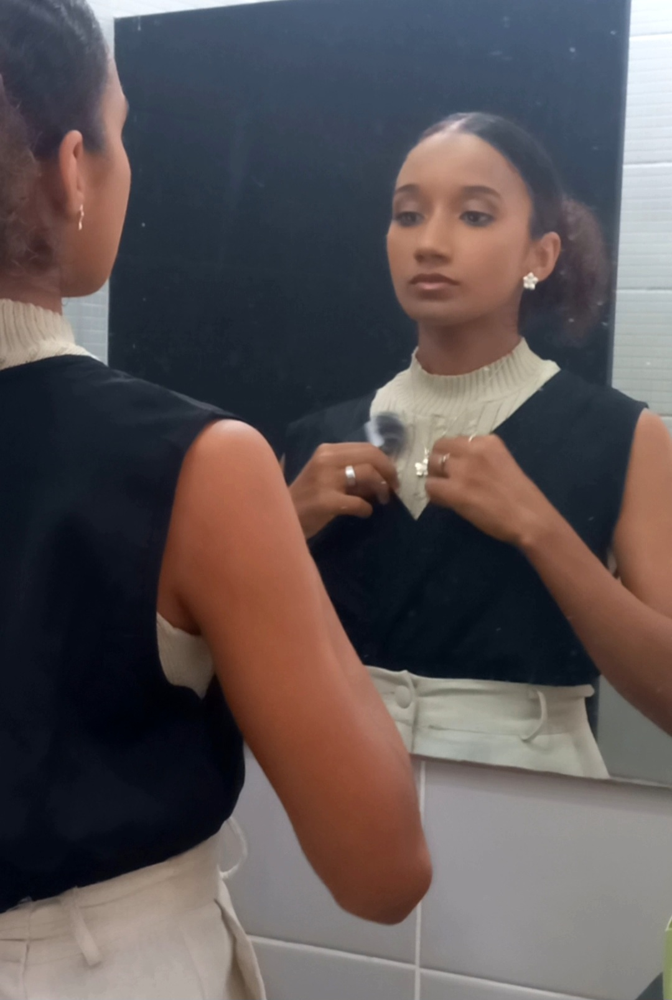

ADM em formação | Consultoria Simples
Dicas de organização e produtividade, orientações práticas para MEIs e pequenos negócios, consultorias acessíveis e humanizadas.
Fluxo de caixa e planejamento.
Organização e rotina.
Capacitação prática.
Olá! Eu sou Maria Eduarda, tenho 24 anos, sou teresinense e estudante
do último período de Bacharelado em Administração pela Universidade
Estadual do Piauí.
Minha jornada na gestão começou muito antes da sala de aula. Sempre fui apaixonada por organização, rotina e pela forma como pequenos ajustes podem transformar completamente a vida das pessoas. Ao longo da graduação, essa paixão ganhou estrutura, método e propósito — e hoje se tornou o meu trabalho.
Criei este espaço para ajudar pessoas que desejam mais clareza, praticidade e equilíbrio, mas não querem nada complicado, pesado ou distante da realidade. Acredito na gestão feita de forma leve, acessível e aplicada ao dia a dia: aquela que realmente funciona.
Aqui você vai encontrar orientação prática, ferramentas simples, acompanhamento próximo e um olhar humano, porque cada pessoa tem sua própria história, ritmo e necessidades. Meu objetivo é caminhar com você para que sua rotina trabalhe a seu favor — não contra você.
Seja para organizar sua vida, sua rotina, seus estudos ou suas finanças leves, você não precisa fazer isso sozinha. Estou aqui para te guiar nessa jornada de forma clara, gentil e eficiente.
Vamos construir sua melhor versão na prática?
Apoio na organização da rotina, priorização de tarefas e criação
de processos simples para o dia a dia.
Resultado: mais clareza, menos sobrecarga e mais produtividade.
Orientação prática para organizar entradas e saídas, controlar gastos
e entender melhor sua realidade financeira.
Resultado: mais controle, segurança e decisões conscientes.
Consultoria personalizada para quem quer organizar a rotina ou o negócio
sem complicação e com foco no que realmente funciona.
Resultado: organização prática e adaptada à sua realidade.
Meu acompanhamento é simples, humano e adaptado à sua realidade. Nada de fórmulas prontas ou processos complicados — caminhamos juntos(as), passo a passo.
Você entra em contato por e-mail contando, de forma breve, o que deseja organizar: rotina, finanças ou processos.
Analiso seu momento, suas dificuldades e objetivos. Cada orientação é pensada de acordo com sua rotina, ritmo e necessidades reais.
Recebe direcionamentos claros, ferramentas simples e sugestões aplicáveis ao seu dia a dia, sem complicação.
Este é um espaço para compartilhar reflexões, dicas práticas e conteúdos sobre organização, produtividade e gestão aplicada ao dia a dia.
Pequenos ajustes que aliviam sua rotina e aumentam seus resultados.
FinançasOrganize seu dinheiro sem culpa, medo ou complicação.
Rotina
Nem sempre o problema é falta de disciplina.
Dicas práticas de gestão para aplicar no dia a dia.
“Sentir-se sobrecarregado(a) não significa falta de capacidade — significa que você está tentando dar conta de muita coisa sozinho(a).”
“Cada pessoa tem uma realidade, um ritmo e uma história diferente.
Por isso, meu trabalho é construído junto com você, com escuta, clareza
e respeito ao seu momento.”
✨ Em breve, este espaço será preenchido com histórias reais de transformação.
Responda com sinceridade. Não existem respostas certas ou erradas.
Aqui você encontra materiais gratuitos para te ajudar a organizar sua rotina, suas ideias e seus próximos passos com mais clareza e leveza.
Um calendário simples para planejar seus compromissos, metas e prioridades ao longo do ano.
Acessar gratuitamenteUm guia visual para entender por onde começar, o que organizar primeiro e como avançar sem sobrecarga.
Acessar gratuitamenteUm planner simples e prático para organizar sua semana com mais clareza, foco e menos sobrecarga.
Acessar gratuitamenteUm guia rápido para identificar o que está te sobrecarregando e por onde começar a se organizar.
✨ Em breveUm exercício simples para te ajudar a enxergar prioridades com mais calma e intenção.
✨ Em breveSe você deseja conversar comigo, tirar dúvidas ou saber mais sobre consultorias e orientações práticas, fique à vontade para entrar em contato por um dos canais abaixo.
✉️ E-mail: me.gestaonapratica@gmail.com
📷 Instagram: @me.gestaonapratica
Retorno em até 24 horas úteis.